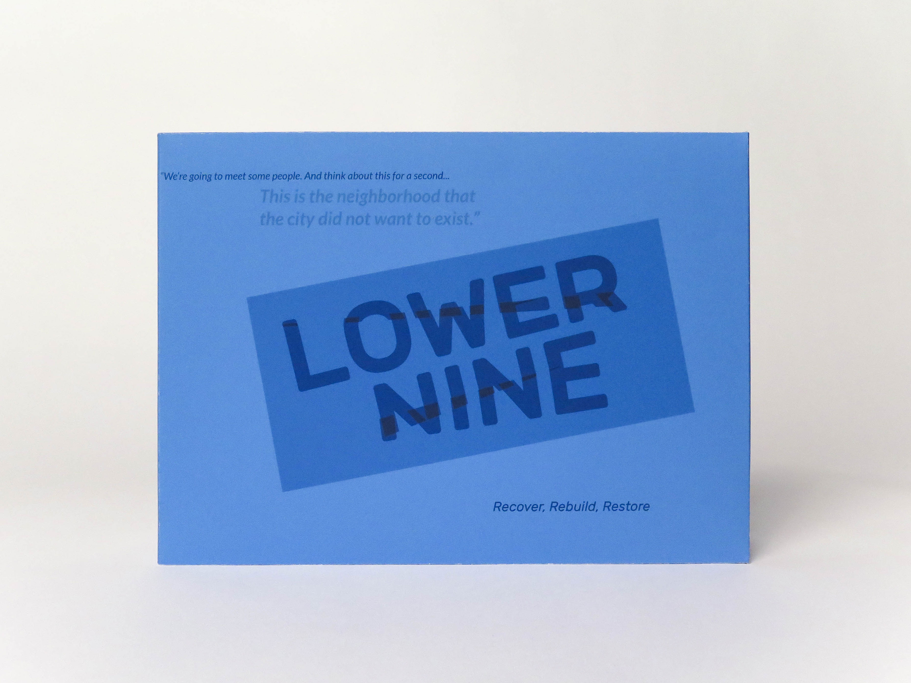
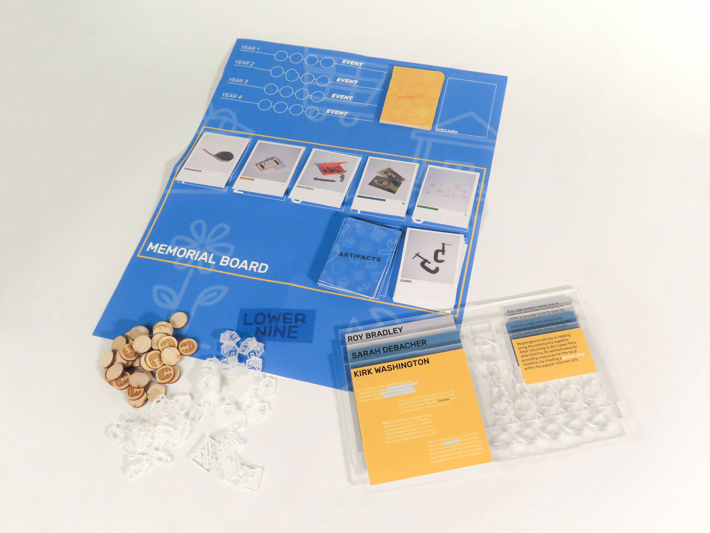
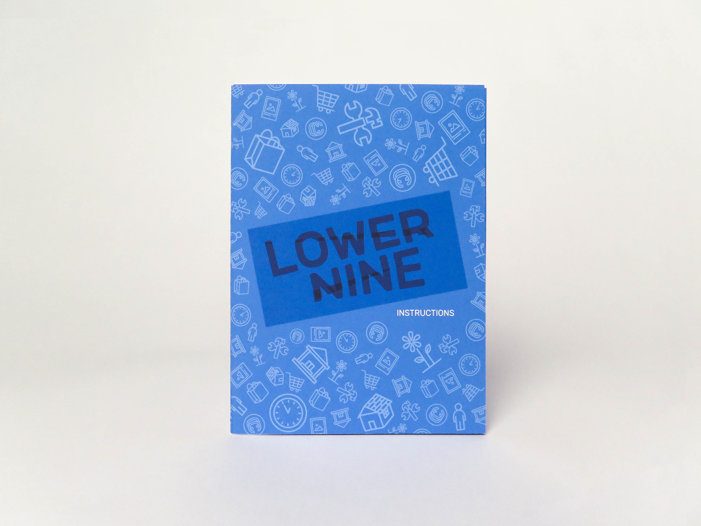
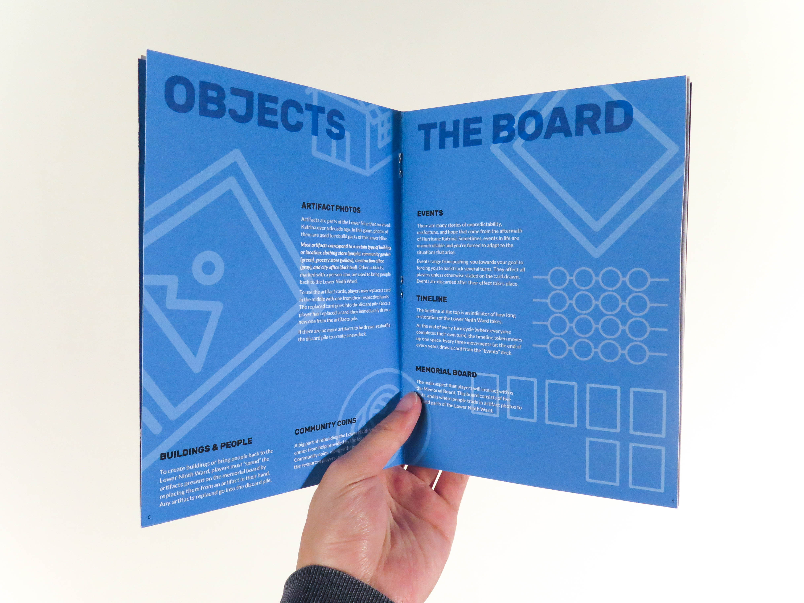
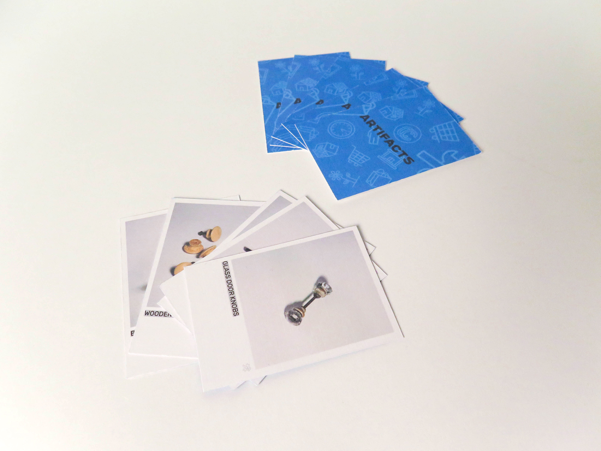
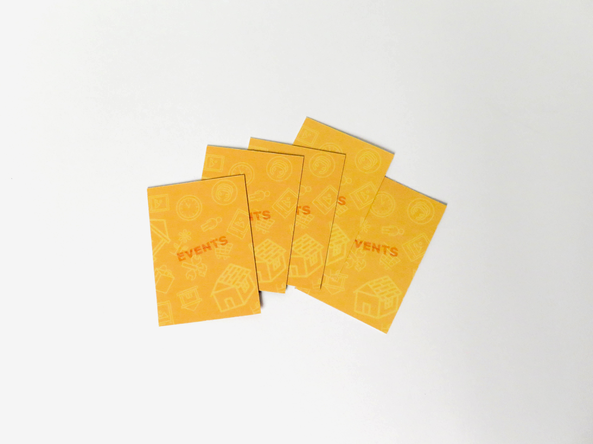
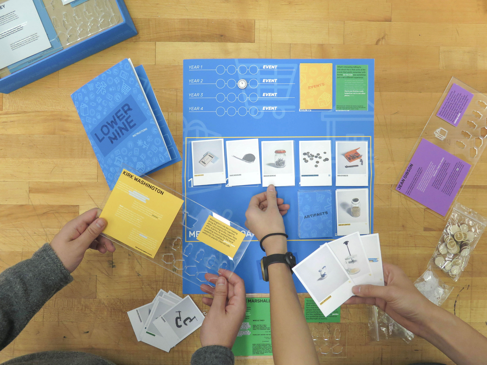
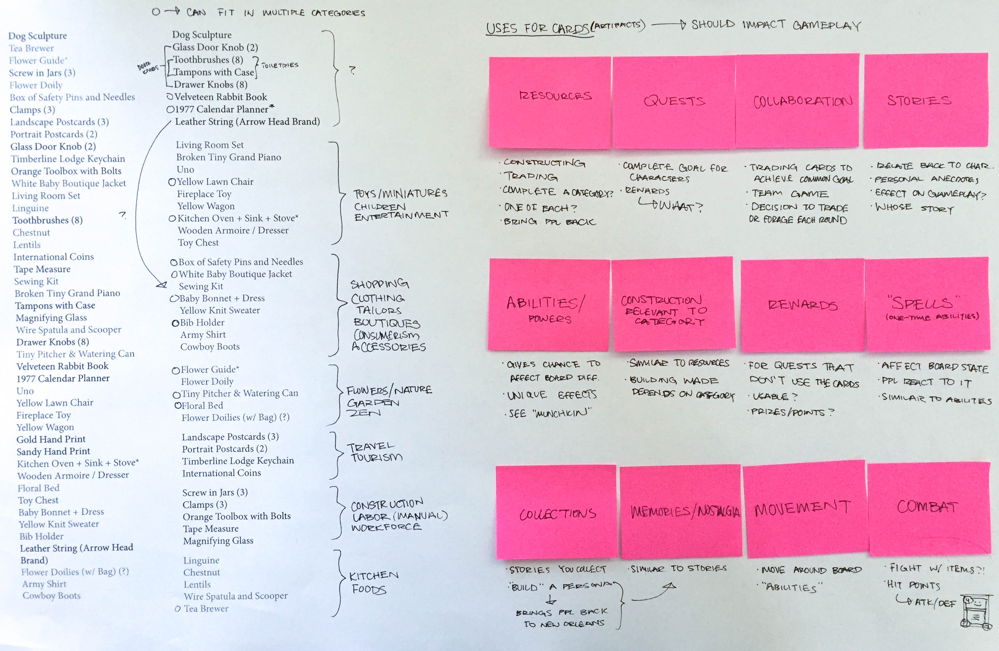
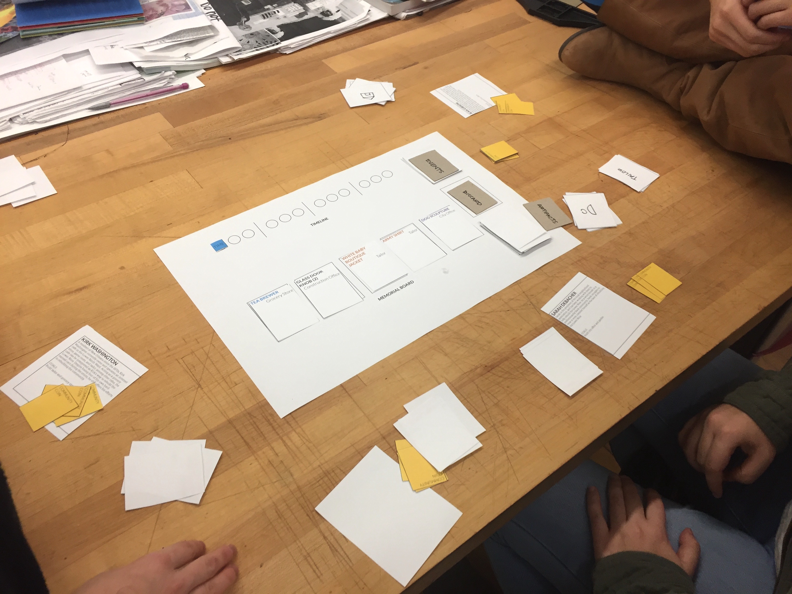
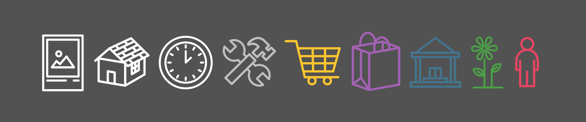

Game Design
December 2016
Physical Prototyping
Visual Design
Book Design
11 years ago, Hurricane Katrina hit New Orleans and left thousands of people with nothing to their names. The podcast This American Life visited one of the most devastated parts of New Orleans, the Lower Ninth Ward, and revealed the stories of those who had survived and were trying to rebuild their lives 11 years after the catastrophe.
The goal for this project was to tell the stories of those from the Lower Ninth Ward. My aim was to create a more interactive experience for telling personal stories by presenting them within the context of a board game.
My concept for the interactive game revolves around players attempting to rebuild the Lower Ninth Ward after Katrina. The players each have their own individual goals, depending on who they're playing as, but must learn how to collaborate in order to fulfill their personal objectives. Points are determined by how much they rebuilt and how often they contributed to the goals of other people.







A major part of this project was figuring out how to incorporate approximately 40 objects that were to be represented as artifacts from Hurricane Katrina. I moved forward with the goal of categorizing them into different locations or settings that can represent parts of the Lower Ninth Ward. Since I was still in the rule development phase, I listed out different ways I could utilize the artifacts as cards (some of which were based off ideas from games I had played).

With my concept planned out, I created a paper prototype of the board to see how people would interact with each other while playing. I realized there were some gameplay elements that could be abused by the players, and also saw spaces where I could stronger promote the idea of collaboration while still making it competitive. From here, I moved to fixing gameplay issues and employing different gameplay elements to emphasize the importance of working with others to reach one's goal.

I also created a set of icons for the game to give more character and use visuals as a way of representing different elements of gameplay. Several of the icons were used as game pieces, as well as graphic elements in many pages of the instruction booklet.

It was extremely challenging to tell the story of a serious event through a game experience and keep it sensitive at the same time. Games are often seen as fun entertainment and occasionally childish, but I'm interested in seeing them as a more serious medium not unlike television and cinema. Over time, I hope to see the perception of games become more respected as they're utilized in fields such as education and art. Through this project, I learned a lot about a traditional game design process and playtesting, as well as the appropriateness of chosen medium and typographic voice.